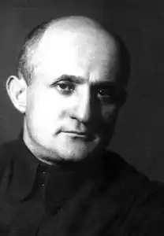
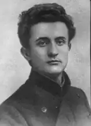

(1889 — 1952)
Народився Давид Гофштейн в 1889 році в містечку Коростишеві на Житомирщині в родині єврея-хлібороба, навчався в хедері (єврейській школі), з сімнадцяти років вчителював на селі, одночасно наполегливо займався самоосвітою. У 1907 році слухав у Києві публічні лекції з різних галузей знань. Військову службу він відбував в Вірменії. Здав в цей час екстерном іспит на атестат зрілості. Мріяв, звичайно, вступити до університету, але на шляху стояла, так звана, процентна норма для євреїв. Навчався в Петербурзькому неврологічному інституті, а пізніше в Київському комерційному, слухаючи одночасно лекції на філологічному факультеті Київського університету ...
Писати почав рано, дев'яти років. Перші роки писав вірші на івриті, російською та українською мовою. Ці вірші були посередніми дослідами поета-початківця. На ідиш Гофштейн почав писати незадовго до війни 1914-1918 років. У пресі виступив тільки після Лютневої революції, т. К. В імперіалістичну війну єврейська преса була заборонена. Дебютував нарисом "In Dorf" (в київській газеті "Neie Zeit", 1917). Почавши пізно друкуватися, Гофштейн відразу зате увійшов в літературу викристалізувалася поетом. Уже в перших своїх віршах, надрукованих у "Neie Zeit" [1918-1919], в I і II збірниках "Eigns" (Київ, 1918-1920), він показав себе поетом великої майстерності. Гофштейн, як і героїчно загинув на фронті його двоюрідний брат О. Шварцман, стояв на чолі дебютували в збірниках "Eigns" поетів: Л. Квітко, П. Маркиш і Л. Різник, що поклали початок так званого "київського періоду" єврейської поезії. Ліризм, виняткове багатство образів, багатогранність, рідкісна музикальність, дивовижна простота, строгість і стриманість слова — все це характерно для творчості Гофштейна. Його книга — "Bei wegen" (Kiever Varlag, 1919), маленькі збірники — "Roite blitn" (Kultur-Liga, Київ, 1920), "Ginen-Geweb" (Укр. Госиздат, Київ, 1921), "Sunen-Schleitn "(там же 1920), поема —" Tristia "(розкішно ілюстрована художником М. Шагалом, Kultur-Liga, Київ, 1922)," Walger-schteiner "(Український Госиздат, Київ, 1922 г.)," Gezamlte werk "( I т., Kultur-Liga, Київ, 1923) — підняли єврейську поезію до висот класиків. У 1925 Гофштейн виїхав до Палестини, але незабаром повернувся на Україну. Життя Давида Гофштейна тісно пов'язана з Україною, зокрема з Києвом, де жив і творив він довгі роки. У воєнне лихоліття, опинившись в Уфі, Гофштейн пише вірші, сповнені любові до України і Києву, сповнені віри в прийдешню Перемогу. Давид Гофштейн був одним з перших заарештованих у справі Єврейського Антифашистського Комітету (ЄАК). Його заарештували в Києві 16 вересня 1948 року. Спочатку попередні допити велися в Києві, а в листопаді він в тюремному вагоні в останній раз пройшов шлях зі столиці України до Москви, дивлячись через заґратоване віконце на українську землю, яку не раз захоплено оспівував у віршах. Після катувань, тортур і так званого "суду у справі ЄАК" Давид Гофштейн і ще 12 видатних діячів єврейської культури були засуджені до розстрілу і розстріляно 12 серпня 1952 року. Цей трагічний для всього єврейського народу вирок став фактично вироком до загибелі ідішистського культури в СРСР. Багато діячів єврейської культури були репресовані, культурні установи закриті. Давид Гофштейн загинув, але його поезія безсмертна. Численні переклади його віршів ще одне цьому підтвердження.